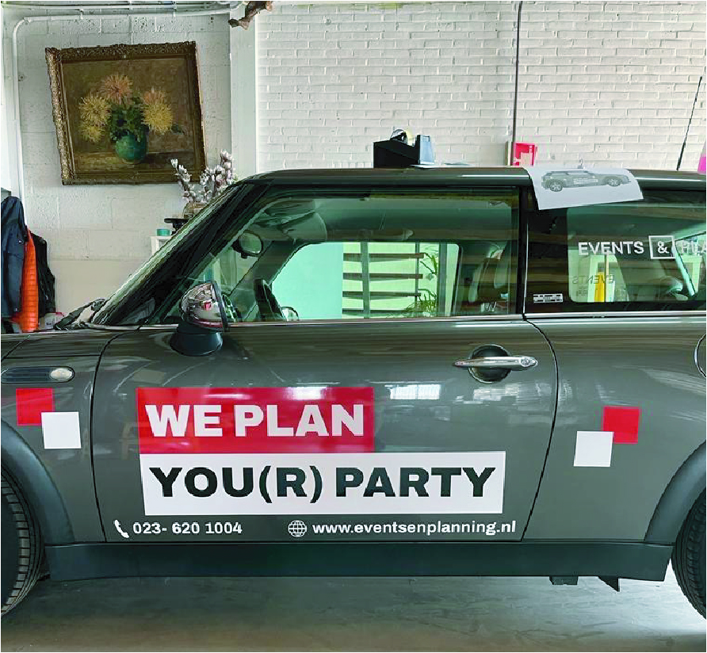
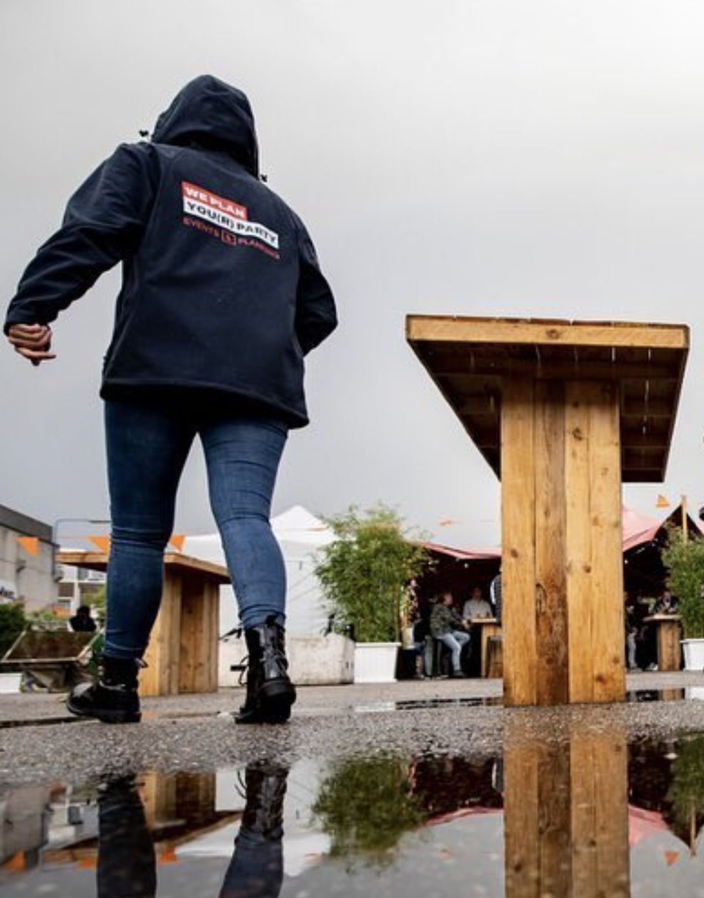
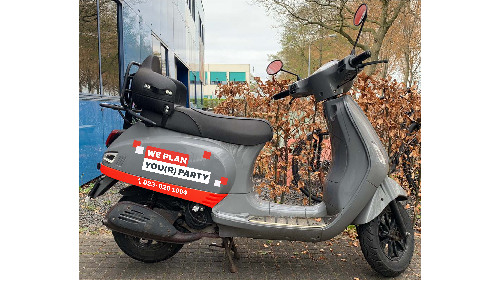

Tijdens mijn stage en dienstverband bij Events & Planning heb ik bijgedragen aan de rebranding van het bedrijf. Ik vernieuwde de huisstijl op verschillende uitingen: gevelbestickering, voertuigbestickering, social media en bedrijfskleding.
Daarnaast was ik betrokken bij de creatieve en productionele kant van verschillende evenementen, van het uitwerken van concepten tot de praktische realisatie op locatie.


